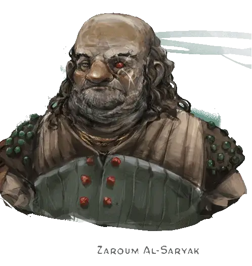

Зарум Аль-Саряк
Zaroum Al-Saryak
Средний Гуманоид (Человек калишит), законно-злой, именной НИП

Класс Доспеха 15 (проклепанная кожа)
Хиты 65 (10к8 + 20)
Скорость 30 футов
| мод | спас | ||
|---|---|---|---|
| СИЛ | 15 | +2 | +4 |
| ЛОВ | 16 | +3 | +5 |
| ТЕЛ | 14 | +2 | +2 |
| мод | спас | ||
|---|---|---|---|
| ИНТ | 14 | +2 | +2 |
| МДР | 11 | +0 | +2 |
| ХАР | 14 | +2 | +2 |
Чувства пассивное Восприятие 10
Языки Все
Опасность 2 (450 опыта)
Бонус мастерства +2
Среда обитания Арктика, Город, Лес, Побережье, Пустыня, Холмы
Особенности
Языки. . Зарум разбойников знает два любых языка.
Действия
Мультиатака. Зарум совершает три рукопашные атаки: две скимитаром, и одну кинжалом. Вместо этого Зарум может совершить две дальнобойные атаки кинжалами.
Скимитар. . Рукопашная атака оружием: +5 к попаданию, досягаемость 5 футов, одна цель. Попадание: Рубящий урон 6 (1к6 + 3).
Кинжал. . Рукопашная или дальнобойная атака оружием: +5 к попаданию, досягаемость 5 футов или дистанция 20/60 футов, одна цель. Попадание: Колющий урон 5 (1к4 + 3).
Реакции
Парирование. Зарум добавляет 2 к КД против одной рукопашной атаки, которая должна попасть по нему. Для этого Зарум должен видеть атакующего, и должен использовать рукопашное оружие.
Описание
Изумрудный глаз
Расчётливый капитан Зарум Аль-Саряк имеет особое пристрастие к драгоценным камням. Он был одевается в пальто, расшитое блестящими драгоценными камни (750 ЗМ) и носит саблю с драгоценными камнями, встроенными в рукоять (1,250 зм). Его корабль, Изумрудный глаз, имеет каюты, оформленные как комнаты во дворце калишитского паши. Аль-Саряк любит отрубать головы тем, кто его огорчает и вешать их на ростре-русалке своего корабля.
Давным-давно травма стоила ему левого глаза и оставила шрам в виде большого X через все лицо. Разрушенная глазница теперь содержит волшебный камень, который позволяет Аль-Саряку различать призрачные пути, ведущие к сокровищам. Камень не работает ни для кого другого. Аль-Саряк также обладает камнем послания, связанный с таким же у Лиары Портир (см. «Форт Белуриан», стр. 54).
Экипаж Изумрудного глаза состоит из первого помощника по имени Волтан (ХЗ мужчина Калишит человек берсерк [berserker]), двенадцати калишитских разбойникоа [bandit], двух калишитских головорезов [thug] и пятерых чультских воителей племени [tribal warrior].